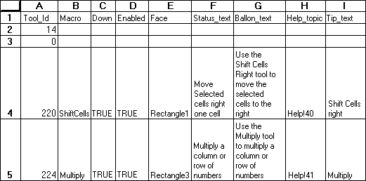

Adds one or more buttons to a toolbar.
Syntax
ADD.TOOL(bar_id, position, tool_ref)
Bar_id is either a number specifying one of the built-in toolbars or the name of a custom toolbar.
| Bar_id | Built-in toolbar |
| 1 | Standard |
| 2 | Formatting |
| 3 | Query and Pivot |
| 4 | Chart |
| 5 | Drawing |
| 6 | TipWizard |
| 7 | Forms |
| 8 | Stop Recording |
| 9 | Visual Basic |
| 10 | Auditing |
| 11 | WorkGroup |
| 12 | Microsoft |
| 13 | Full Screen |
Position specifies the position of the button within the toolbar. Position starts with 1 at the left side (if horizontal) or at the top (if vertical).
Tool_ref is either a number specifying a built-in button or a reference to an area on the macro sheet that defines a custom button or set of buttons (or an array containing this information).
For customized buttons, the following example shows the components of a button reference area on a macro sheet and defines custom tools. The range A1:I5 is a valid tool_ref. Row 1 refers to a built-in tool. Row 2 defines a gap. For this illustration, values are displayed instead of formulas so that text can wrap in cells.

Tool_id is a number associated with the tool. A zero specifies a gap on the toolbar. To specify a custom button, use a name, or a number between 201 and 231.
Macro is the name of, or a quoted R1C1-style reference to, the macro you want to run when the button is clicked.
Down is a logical value specifying the default image of the tool. If down is TRUE, the button appears depressed into the screen; if FALSE or omitted, it appears normal (up).
Enabled is a logical value specifying whether the button can be used. If enabled is TRUE, the button is enabled; if FALSE, it is disabled.
Face specifies a face associated with the tool. Face must be a reference to a picture-type object, for example "Picture 1". If face is omitted, Microsoft Excel uses the default face for the tool.
Status_text is the text, if any, that you want displayed in the status bar when the button is selected.
Balloon_text is the balloon help text, if any, associated with the tool. Balloon_text is available only in Microsoft Excel for the Macintosh using system software version 7.0 or later.
Help_topics is a reference to a topic in a Help file, in the form "filename!topic_number". Help_topics must be text. If help_topics is omitted, HELP displays the Contents topic for Microsoft Excel Help.
Tip_text is the text, if any, that you want displayed as a ToolTip when the mouse pointer moves over a tool button.
To indicate that a particular component of tool_ref is not used, clear the contents of the corresponding cell.
Remarks
If you do not want to reserve a section of your macro sheet to define the buttons, you can use an array as the tool_ref argument as shown in the following syntax:
ADD.TOOL(bar_id, position, {tool_id1, macro1, down1, enabled1, face1,
status_text1, balloon_text1, help_topics1;tool_id2, macro2, down2, enabled2,
face2, status_text2, balloon_text2, help_topics2;...})
Picture objects can be created with the camera button or pasted in from another application. In Microsoft Excel for Windows, the graphic object must be either a Windows bitmap or picture object. In Microsoft Excel for the Macintosh, the object must be a picture object.
Examples
The following macro formula adds a button to Toolbar5. The cell range B6:I6 contains tool_ref.
ADD.TOOL("Toolbar5", 6, B6:I6)
The following macro formula adds the New Macro Sheet button to the fifth position on the Standard toolbar:
ADD.TOOL(1, 5, 6)
Related Functions
ADD.COMMAND Adds a command to a menu
ADD.TOOLBAR Creates a toolbar with the specified tools
DELETE.TOOL Deletes a button from a toolbar
DELETE.TOOLBAR Deletes custom toolbars
RESET.TOOLBAR Resets a built-in toolbar to its default initial setting